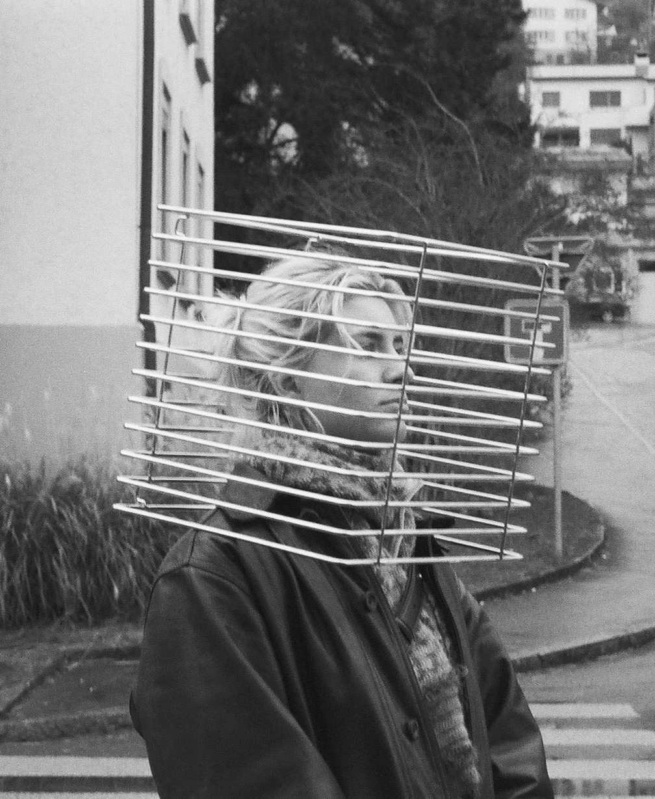

About
Hallo, ich bin Josephine und habe Spatial Design in Luzern studiert. Während meines Studiums habe ich einen Austausch in Stockholm gemacht, wo ich mich auf Innenarchitektur und Möbeldesign konzentriert habe. Zuvor habe ich den Vorkurs am SFG in Basel besucht. Besonders spannend finde ich an Spatial Design die Interaktion mit Menschen – sei es im Austausch mit anderen Kreativen oder im Gespräch mit Menschen, die sonst wenig mit Räumen zu tun haben. Auch interessiert mich, wie Menschen sich in Räumen verhalten und wie Räume Geschichten erzählen können. Mein Ziel ist es, nicht einfach nur Räume zu gestalten, sondern Orte zu schaffen, die Geschichten transportieren und in denen man sich wohlfühlt.
